Cinema right · dining left

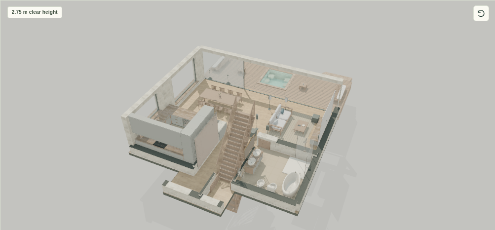

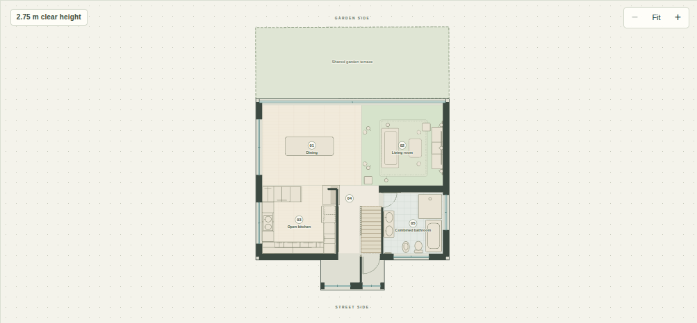
The screen and 7.2.4 system use the right exterior wall. Dining keeps the large left picture window.
- Side glazing
- Left side window
- Screen to listener
- 2.76 m
Measured layouts · Captured in the viewer
Compare the four living-room arrangements, explore the fitted kitchen, and inspect the new hall mirror. These are captures from the 1.40 application, with the same furniture and openings used in the interactive house.
01 / Living & dining
The selector moves furniture and audio devices and changes the actual side-wall openings. All four options retain eight-seat dining and a continuous 1.00 m strip along the rear terrace glazing. The captures use the Scandinavian finish for a consistent comparison.


The screen and 7.2.4 system use the right exterior wall. Dining keeps the large left picture window.
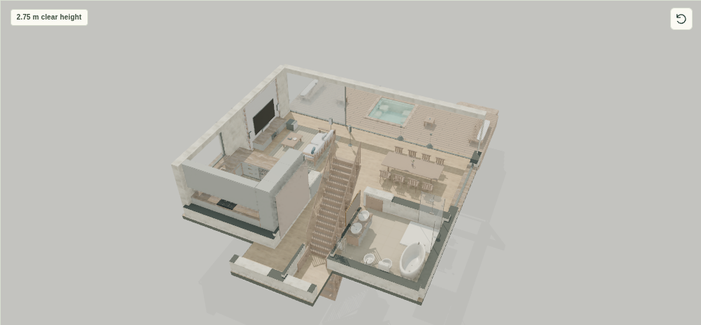
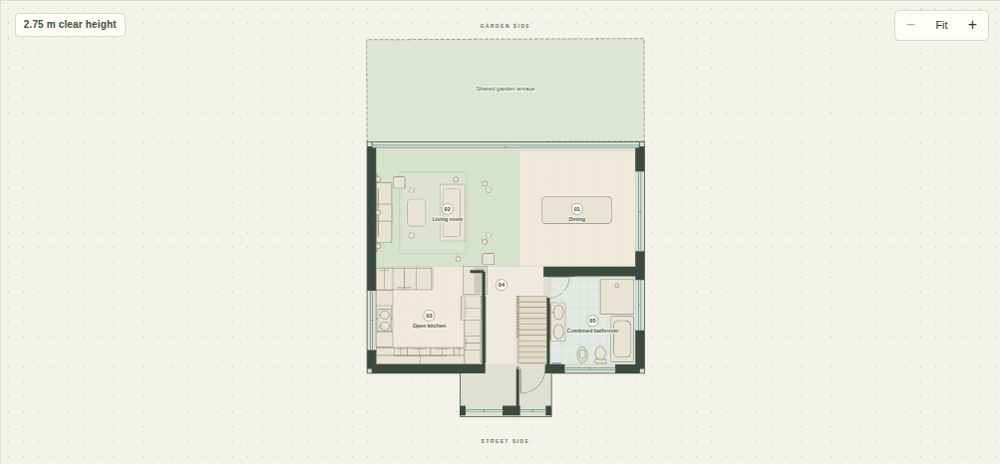
The cinema and dining table swap sides, together with the solid media bay and picture window.
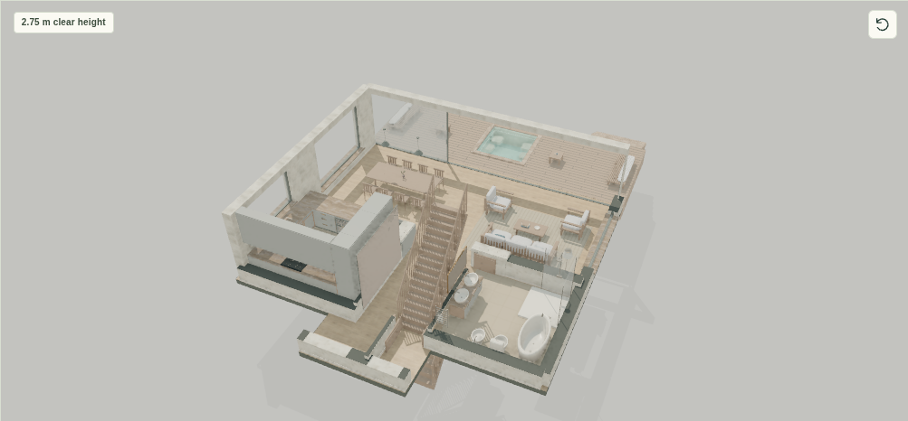
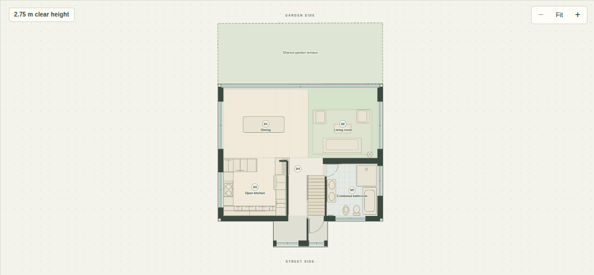
Conversation seating and eight-seat dining, with large picture windows on both sides. The screen and all cinema audio are removed.
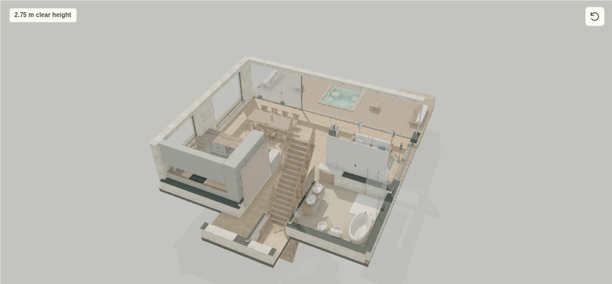
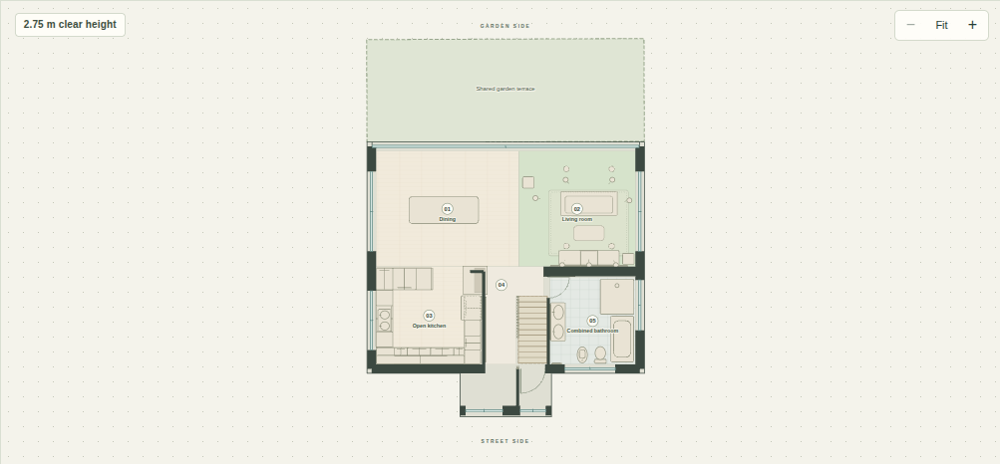
The screen uses the existing internal crosswall. The sofa faces inward, with a passage behind it to the full-width terrace glazing.
Screen reservation: A, B and D model an 85-inch, 16:9 screen envelope, approximately 1.882 × 1.058 m. This is a planning size. The Philips 83OLED811/12 is an 83-inch OLED / Dolby Vision 2 Max candidate; its official datasheet has inconsistent size entries, so its final installation dimensions remain provisional.
7.2.4 in A, B and D: seven ear-level speakers, two independent subwoofers and four flush ceiling speakers. The arrangement uses eleven amplified channels and an open, ventilated receiver bay. Final equipment, aiming and bass calibration follow the completed room.
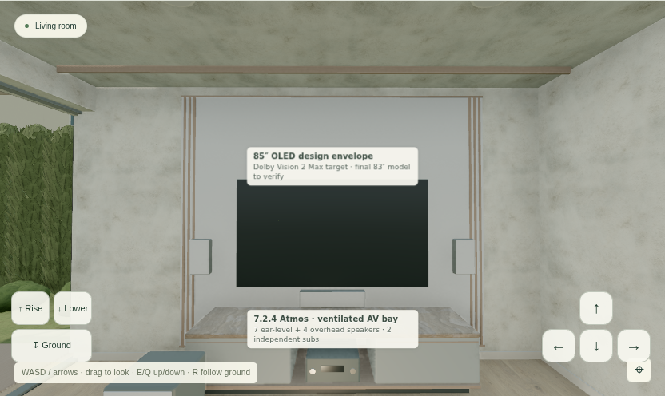
02 / Fitted kitchen
Two full-size integrated dishwashers flank the workstation sink. The opposite run holds the steam oven, separate microwave oven, four-door fridge-freezer and concealed nutrition pantry. Independent labels identify equipment behind matching cabinet fronts.
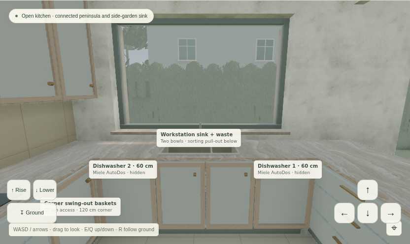
Two 600 mm clear dishwasher niches and a 1,010 mm sink cabinet share the 2,250 mm wet run. The Franke two-bowl reference is 860 × 510 mm.
Open full capture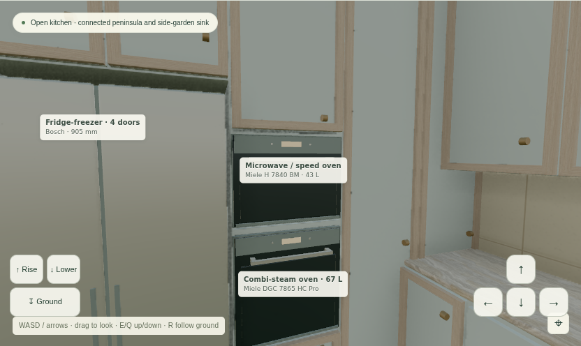
Miele DGC 7865 HC Pro, 67 L; Miele H 7840 BM, 43 L; four-door fridge-freezer in a 960 mm bay; 550 mm nutrition pantry. The peninsula includes a two-zone wine cooler.
Open full captureThe 2.30 × 1.46 m sink window remains clear above and on both sides. Cabinet allocations are planning envelopes; selected installation drawings govern ventilation, hinge movement, worktop cut-outs, services and mounting.
03 / Stair-side wall
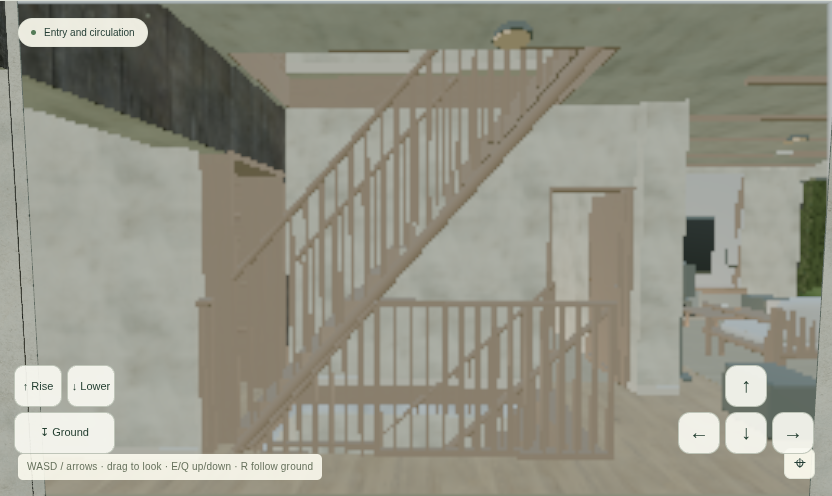
The mirror fills the hall face of the kitchen enclosure, clear of the retained chimney and entrance. Its lower edge sits 180 mm above the floor.
The reflection shows the actual modeled hall. It refreshes after movement settles and keeps its last image while walking.
The verified browser capture records one active mirror, a completed reflection and no reflection updates while moving.
04 / Evidence
Download the complete browser report · Review the implementation
These functional captures do not by themselves establish a frame-rate improvement. Dimensions describe the planning model.
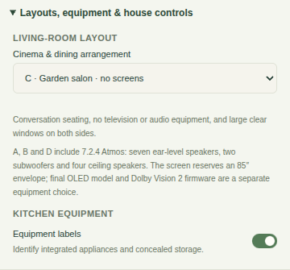